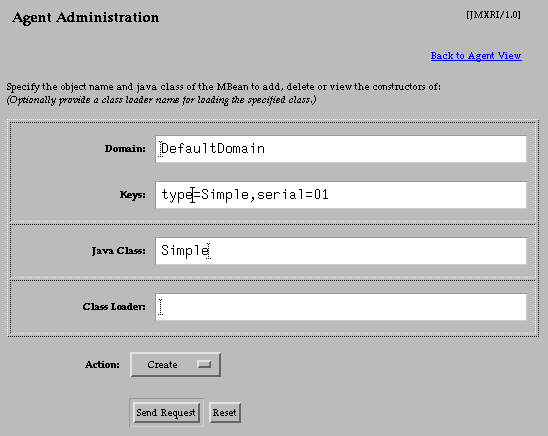

Tutorial
|
JMX Reference Implementation Tutorial |
![[ Previous ]](images/leftarrow.gif) The MBean View |
![[ Contents ]](images/uparrow.gif) Contents |
![[ Next ]](images/rightarrow.gif) Instantiating and Managing MBeans |
Action: Click on the "Admin" button in the agent view to bring up the agent administration page in your browser window.
 From this page, you can create or unregister any MBean. To instantiate an MBean, its class must be available in the classpath of the agent application. Optionally, you can specify a different class loader in the appropriate field, but this is not covered in this tutorial--please refer to the chapter in the JMXTM specification on class loading.
The first two fields are mandatory for all administrative actions. The "Domain" and "Keys" fields define the object name, whether for a new MBean to be created or the name of an existing MBean to unregister. Object names are described in the next paragraph. The "Java Class" is the full class name of the object to be instantiated as a new MBean. This field is ignored when unregistering an MBean.
Object Names
As defined in the JMX specification, all registered MBeans must have a unique object name given by:
DomainName :property=value[,property2=value2]*
The elements of the object name string can contain any characters except: , = * ?. However, special characters can be used between quotes. The DomainName is used to group MBeans that might be related since the MBean server makes it simple to query or filter MBeans using the domain. Property-value pairs in the keys usually identify individual MBeans, for example with a serial number or a name.In all cases, it is up to the developer to assign a semantic meaning to the domain, property and value strings. The MBean server only checks that a given name is unique inside an agent.
Adminstrative Actions
You can select one of three actions on this page:
You click the "Send Request" button once you have filled in the required fields and selected the desired action. The HTML adaptor will process the request and update the page with the action results appended to the end. The text fields are not cleared after an action, so you can modify them for another action, for example to perform multiple creations. The "Reset" button will return the fields to their last posted value after you have modified them.
- Create - Instantiate the given Java class of an MBean and register the new instance in the MBean server. If registration is successful, the MBean will then appear in the agent view. The class must have a constructor without parameters to be created in this way.
- Unregister - Unregisters an MBean from the MBean server so that it is no longer available in the agent. The class instance is not explicitly deleted, though if no other references to it exist, it will be garbage collected.
- Constructors - Produces the list of constructors at the bottom of the administration page for the given Java class. This lets you provide parameters to a specific constructor and create the MBean in this manner. This is the only way to create MBeans which do not have a no-parameter constructor.
Note: the HTML adaptor does not currently handle constructors for dynamic MBeans.
|
The MBean View |
Contents |
Instantiating and Managing MBeans |
Copyright 2000-2003
Sun Microsystems, Inc.,
All rights reserved.